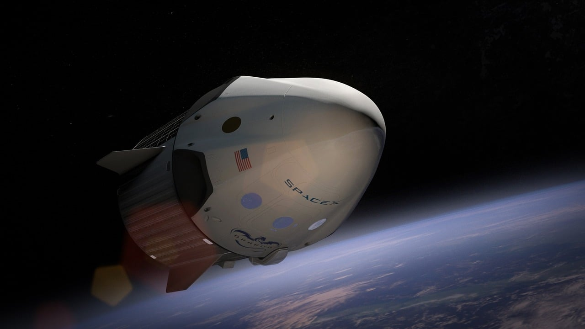
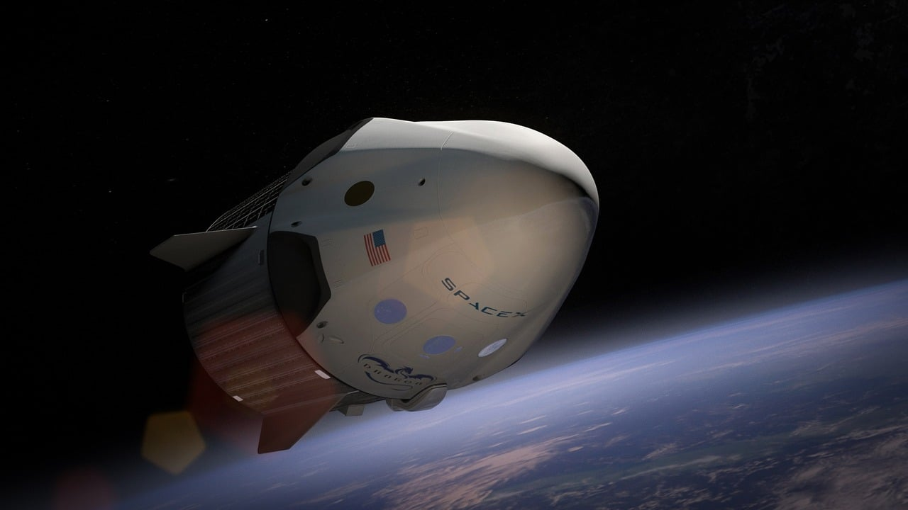

In microgravity, astronauts experience significant muscle atrophy and bone density loss.
Without the constant pull of Earth's gravity, bones lose minerals, leading to a condition similar to osteoporosis.
Muscle mass and strength decrease as muscles are used less frequently.
To combat these effects, astronauts engage in regular resistance exercises using specialized equipment, and they receive nutritional supplements to maintain bone and muscle health.
Research continues to focus on optimizing exercise protocols and dietary interventions to minimize these adverse effects.
The cardiovascular system undergoes significant changes in space.
Fluids in the body shift towards the upper body and head, causing a phenomenon known as fluid redistribution.
This shift can lead to facial puffiness, nasal congestion, and increased intracranial pressure, which may affect vision.
The heart may also become more spherical and less efficient at pumping blood.
To mitigate these effects, astronauts are monitored closely, and they perform cardiovascular exercises to maintain heart health.
Ongoing studies aim to better understand these changes and develop effective countermeasures.
Space travel can alter immune function, potentially increasing susceptibility to infections.
Microgravity, radiation exposure, and the stress of space travel can weaken the immune response.
Astronauts' blood and saliva samples often show changes in the activity of immune cells, suggesting a compromised ability to fight off pathogens.
Continuous monitoring of immune function is essential, and researchers are exploring ways to boost immune resilience, such as through nutritional interventions and pharmacological approaches.
Ensuring astronauts' immune health is critical for long-duration missions.
The psychological challenges of space travel include isolation, confinement, and the stress of living in a high-risk environment.
These factors can lead to anxiety, depression, and sleep disturbances.
Maintaining mental health is crucial for mission success, so astronauts have access to psychological support, including regular communication with mental health professionals, virtual reality tools for relaxation, and structured schedules to reduce stress.
Research into the psychological effects of space travel helps develop better support systems to ensure astronauts' well-being.
 
